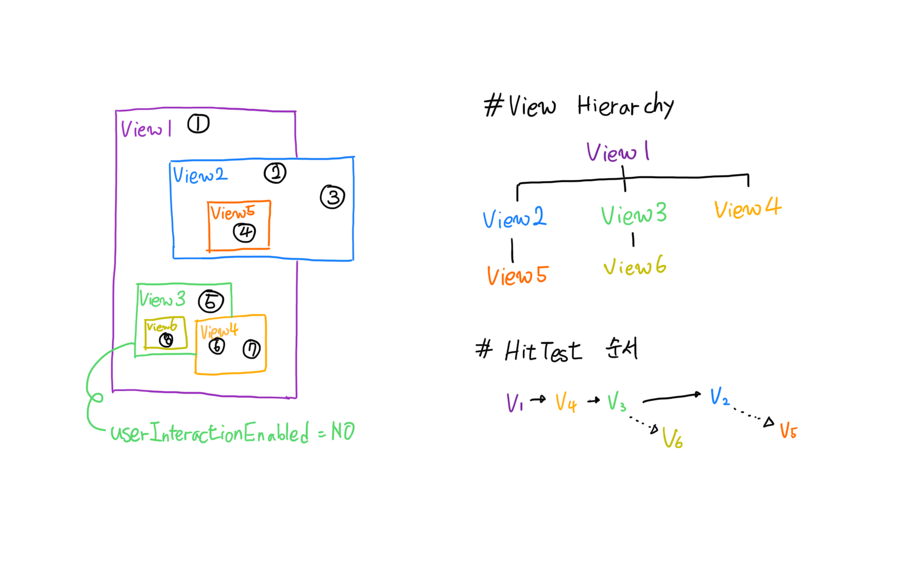

[iOS] Touch Event가 View를 통해 전달되는 과정 (hitTest)
-읽음
hitTest:: 를 통해 View 계층구조를 따라 Touch가 전달되는 과정을 살펴보자
서론
앱을 개발하다보면 복잡한 View Hierachy를 만나게 됩니다. 거기에 Button, tableViewCell, CollectionViewCell 등 UserInteraction을 받는 View들이 겹치게 되면 기대와 달리 터치 이벤트를 받지 못하는 오류를 만날 수 있습니다.
이번 포스팅을 통해 iOS에서 Touch 이벤트가 Subview에게 전달되는 과정을 이해함으로써 좀 더 나은 앱을 만들 수 있었으면 합니다.
사용자 입장에서의 터치, iOS 시스템 입장에서의 터치
사용자 입장
당연한 이야기이지만 사용자와 Interaction하는 View(UIButton, UIScrollView 등…)들은 사용자에게 보이기 위해 디바이스 화면상에서 가장 최상단에 위치합니다. 사용자들은 눈에 보이는 Button을 직접 누르고, 스크롤을 직접 내리는 것으로 인식합니다.
iOS 시스템 입장
iOS 시스템은 사용자의 입장과 반대로 동작합니다. 사용자의 터치는 iOS 시스템이 입력받아 UIApplicaion 에게 전달, UIWindow를 통해 View Hierachy를 따라 Top-down으로 전달됩니다. 따라서 View의 Insteraction을 개발할 때는 iOS 시스템 입장에서 접근해야합니다.
HitTest::
UIView에는 HitTest:: 라는 함수가 있습니다. 이 함수를 통해 최종적으로 어떤 View가 사용자의 이벤트를 처리할 지 결정합니다. 이 과정을 이해하면 오류 수정 및 커스텀 뷰 개발을 더 잘 할 수 있습니다!
직접 테스트해보자
아래의 그림처럼 View Hierachy를 만든 후 각 번호의 위치를 클릭하여 최종적으로 사용자 이벤트를 처리하는 View를 찾아보겠습니다.

1번 위치 클릭 : View12번 위치 클릭 : View23번 위치 클릭 : nil- View2는 View1의 SubView이지만 3번 위치는 View1의 외부에 존재합니다. 따라서 View1, View2 모두 이벤트를 받지 못해 nil이 리턴됩니다.
4번 위치 클릭 : View55번 위치 클릭 : View1- View3은 userInteractionEnabled 옵션을 NO로 지정했습니다. 따라서 interaction을 받지도, subview로 전달하지도 못하고 최종적으로 View1이 리턴됩니다.
6번 위치 클릭 : View4- View4는 View3위에 있는것처럼 보이지만 View Hierachy로 보면 View1의 Subview입니다. View3과는 무관하게 hitTest에 통과하여 View4를 리턴합니다.
7번 위치 클릭 : View48번 위치 클릭 : View1- View6은 UserInteraction을 받지 못하는 View3의 Subview입니다. 최종적으로 hitTest를 통과한 View1이 리턴됩니다.
hitTest View Hierachy 순회 순서
DFS방식으로 순회합니다. 가장 최 상단의 View1을 먼저 순회합니다.
View2, View3, View4는 동일 계층입니다. 동일 계층에서는 index가 큰 순서부터 순회합니다. (화면 상에서 가장 가까이 보이는 순서)
순회 도중 Subview를 소유하고 있다면 Subview의 hitTest를 진행합니다.
HitTest:: 에 통과하는 (Touch 를 받는) 조건
- Hidden = NO
- Alpha > 0.01
- userInteractionEnabled = YES